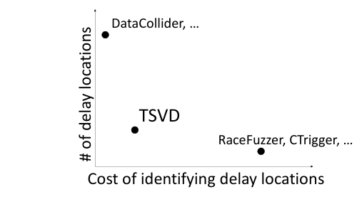
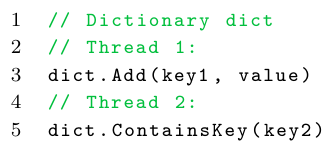
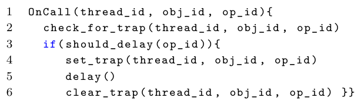
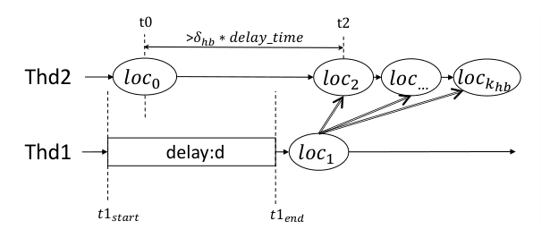
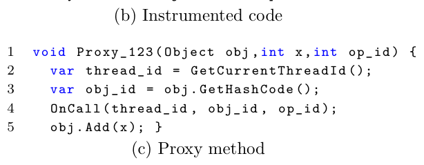
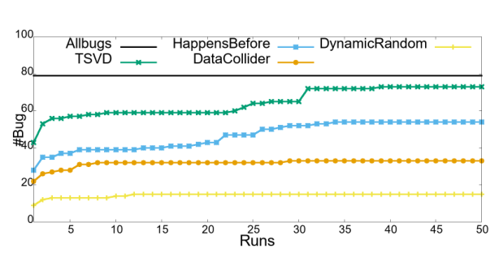
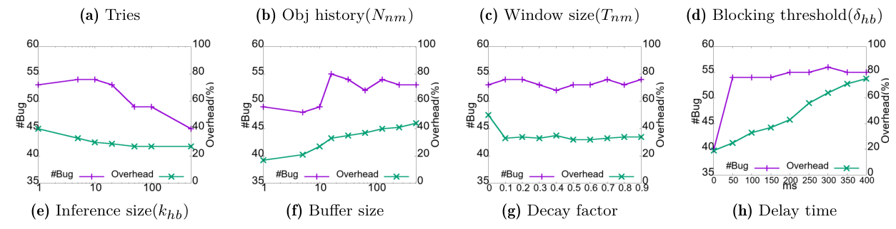
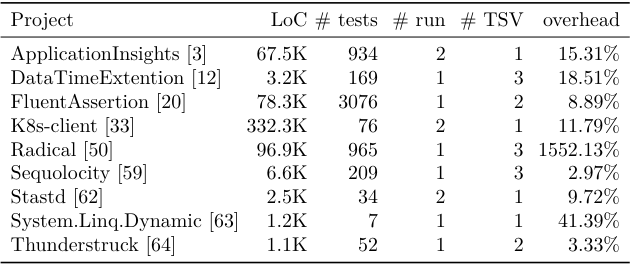
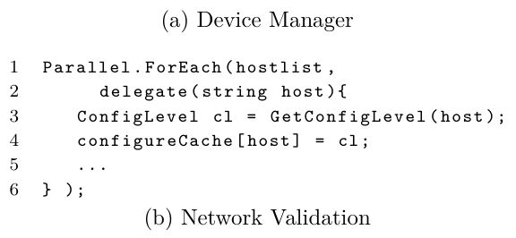

Efficient Scalable Thread-Safety-Violation Detection: Finding thousands of concurrency bugs during testing
This page was written by an AI model to give a high-level overview of the paper. Please check the paper for detail: ACM Digital Library.
A thread-safety violation (TSV) is a generalization of a data race from a single variable to an object or data structure: a class exposes an informal contract saying which of its methods can be called concurrently, and a TSV occurs when client code violates that contract, for example by calling a thread-unsafe Dictionary.Add from one thread while another thread calls ContainsKey on the same object. TSVs are common because developers misjudge a library's contract (a frequent mistake: assuming concurrent writes to different keys of a dictionary are safe), they are easy to miss in code review, and they can corrupt state silently rather than crash immediately, so they often escape in-house testing and surface later as production outages that take weeks to diagnose.
Existing dynamic techniques do not fit an industrial build-and-test pipeline that runs tests from thousands of engineering teams. Passive happens-before (HB) or lock-set race detectors must model every synchronization primitive precisely; with the wide variety of synchronization in production code (asynchronous tasks, async/await, ad-hoc signaling) this is expensive, and a missed HB edge gives a false bug while a spurious one hides a true one. Active delay-injection, which only reports a bug once it is actually triggered, avoids false positives, but existing instances sit at two extremes: probabilistic injection at every access (DataCollider) needs tens of reruns of the same test to find a bug, while synchronization-aware injection (RaceFuzzer, CTrigger) needs expensive analysis and at least two separate runs (one to analyze, one to inject). Both are unacceptable when test infrastructure is shared across an organization and reruns and analysis time both cost machines.
TSVD occupies a new middle point in this space. It monitors only calls to the specific thread-unsafe methods under test (not synchronization operations), and uses that lightweight signal in two ways: it tracks when two conflicting calls from different threads happen close together in time ("near misses") as candidates worth delaying, and when it does inject a delay, it watches whether that delay propagates to other threads to infer a likely happens-before edge between the two call sites, without modeling locks, forks, joins, or any other synchronization mechanism. Pairs believed to be happens-before ordered are pruned from further delay injection; pairs that keep narrowly missing each other get probabilistically delayed, with the delay probability decaying over time to bound overhead.
Mechanically, TSVD statically instruments calls to a configurable list of thread-unsafe APIs (read or write) with a proxy that calls a small runtime hook before the original call. The hook checks a global "trap" table: if another thread currently holds a trap on the same object with a conflicting operation, a TSV is reported immediately with both threads' stack traces, caught "red-handed." Otherwise, the hook may set its own trap and sleep briefly, chosen by a dangerous-pair list that is built from near-miss tracking, concurrent-phase detection, and HB inference, and whose entries decay away if delays repeatedly fail to trigger a conflict. All of this (near-miss tracking, HB inference, delay injection) happens within a single test run, rather than splitting planning and injection across runs.
Deployed across roughly 43,000 .NET software modules from 1,657 Microsoft projects, TSVD found over 1,000 previously unknown TSVs (1,134 unique buggy location pairs, over 21,000 unique stack-trace pairs). Of 80 bugs manually validated with four product teams, all were confirmed real, 48% were classified high priority (would otherwise risk a customer-facing outage), and 70% have since been fixed. On a 1,000-module benchmark, TSVD found more bugs than DataCollider, a naive random-delay baseline, and a happens-before-analysis variant, mostly within its first test run, at about 33% runtime overhead versus several-times slowdowns for the alternatives.

Key takeaways
- A TSV generalizes a data race to objects: it is a violation of a class's thread-safety contract (which methods may run concurrently), detected without reasoning about individual memory accesses.
- TSVD sits in a new "design space" middle ground: unlike full HB analysis it does no synchronization modeling, and unlike pure random delay injection it targets delays using lightweight near-miss tracking, so it needs far fewer reruns.
- Happens-before relationships are inferred, not analyzed: if delaying location A causes a measurable delay at location B in another thread, TSVD infers A happens-before B and prunes that pair from future delay injection.
- Planning (finding dangerous pairs) and injection (triggering the bug) happen in the same test run, so most bugs that can be caught are caught on the very first run.
- Deployed in Microsoft's build-and-test pipeline, TSVD found 1,000+ confirmed, previously unknown concurrency bugs across ~43K modules, with zero false positives and ~33% average overhead.
From a trap mechanism to happens-before inference
What a TSV looks like, the shared trap framework, how TSVD decides where and when to delay, and how it is instrumented into .NET binaries.
1 · What a thread-safety violation looks like
Each thread-unsafe class is assumed to split its methods into a read set and a write set, such that two concurrent calls violate the contract exactly when at least one is a write. A TSV occurs when a client calls two such conflicting methods on the same object from two different threads without synchronization protecting them.

TSVs are harder to reason about statically in modern C# code than in classic threaded code, because task-based and async/await programming creates arbitrary, dynamically-created task graphs: tasks fork via Task.Run or implicitly via async/await, and any task can join with any other via a handle, so forks and joins no longer form a restricted series-parallel graph. Prior happens-before techniques that assume a fixed thread count, data accesses far outnumbering synchronization operations, or series-parallel task structure do not hold here: these programs create many more tasks than threads, have as many synchronization events (forks, joins) as monitored accesses, and join arbitrarily rather than in a nested fashion.
2 · The shared trap mechanism
TSVD and its baseline variants all build on the same trap framework. A static analysis first identifies call sites to a configurable list of thread-unsafe methods ("TSVD points") and an instrumentation pass wraps each with a call to OnCall(thread_id, obj_id, op_id) before the real method executes.

- On entry, a thread checks the global trap table for a conflicting trap: same object, different thread, and at least one of the two operations is a write. If found, a TSV is reported immediately with both threads' stack traces.
- A
should_delayfunction decides whether this call should set its own trap. If so, the thread registers a trap keyed by (thread, object, operation) and sleeps for a fixed period. - On waking, the thread clears its own trap and proceeds, regardless of whether a conflict was found during the sleep.
Every variant answers two design questions differently: where to inject delays (which call sites are eligible) and when (at which dynamic occurrences, in which runs). Two simple baselines, used for comparison, make every TSVD point eligible everywhere: DynamicRandom delays with a small fixed probability at any dynamic occurrence, and StaticRandom (modeled on DataCollider) instead samples uniformly over static call sites, so hot paths are not over-sampled relative to cold ones.
3 · Why the baselines were not enough
Both baselines found bugs, but many required tens of reruns of the same test. The authors traced this to delays landing in the "wrong" places: sequential phases (for example, while other threads wait on an external event) where a delay only slows the test down without exposing anything, or accesses that are consistently protected by the right lock. Avoiding both kinds of wasted delay, without modeling locks or any other synchronization primitive, is what TSVD's two inference mechanisms are for.
4 · Where to delay: near-miss tracking and concurrent-phase detection
TSVD maintains a global hash table, indexed by each object's hash code, of recent accesses to that object. A pair of accesses at locations loc1 and loc2 is flagged as a near miss, and added to a dynamic "trap set" of dangerous pairs, if they come from different threads, touch the same object, at least one is a write, and they occurred within a time window δ of each other. Intuitively, calls that never get close in time are unlikely to ever race given the program's real synchronization, so TSVD does not waste delays on them.
A second filter infers concurrent execution phases: TSVD keeps a fixed-size global history buffer of the most recently executed TSVD points. If that buffer currently holds calls from more than one thread, the program is considered to be in a concurrent phase; delays are only useful there, since a TSVD point reached during a purely sequential phase (such as single-threaded initialization) can never race.
5 · When to prune: inferring happens-before from delay propagation
Near-miss tracking alone over-approximates: two accesses that are always protected by the same lock can still occur close together in time. TSVD prunes such pairs using a lightweight causal test rather than modeling the lock itself.

The key observation: if loc1 happens-before loc2, then delaying loc1 causes a proportional delay at loc2 in another thread. Concretely, when a delay is injected right before loc1 (running from t1_start to t1_end), and a different thread later reaches loc2 at time t2 whose previous access in that thread was at t0, TSVD infers an HB edge from loc1 to loc2 if (1) the gap t2 − t0 is at least δhb times the injected delay length, and (2) that gap overlaps the injected delay (t0 ≤ t1_end). By transitivity, the next khb accesses in that thread after loc2 are also treated as happens-after loc1. Pairs inferred to be HB-ordered are removed from the trap set, since they are unlikely to ever race.
Because none of this requires observing locks, forks, joins, or any other specific synchronization construct, TSVD works uniformly across threading, task-parallel, and async/await code, and needs instrumentation only at the thread-unsafe API calls themselves ("local instrumentation"), not anywhere else in the program.
6 · Bounding overhead: probabilistic delay with decay
Each program location in the trap set carries a delay probability, initialized to 1 when a dangerous pair containing it is first added. Every time a delay at that location fails to actually trigger a conflict with its paired location, the probability decays; once it reaches 0, the location (and its pairs) are dropped from the trap set. This keeps TSVD from repeatedly paying delay cost at locations that keep failing to race, which matters because the same static location can execute many times in one test (TSVD observed a buggy location recurring 35.6 times on average).
7 · When to delay: same-run planning and injection, with optional reruns
Unlike techniques that separate analysis and injection into different runs, TSVD plans and injects delays in the same run: the first time a near-miss is observed, TSVD can already try to expose it, since most call sites execute more than once in a test. Delays are injected aggressively, without strictly avoiding overlap between multiple concurrently delayed threads, because the decay scheme and natural staggering of thread wake-ups make destructive overlap rare, and avoiding all overlap would mean too few delays within a tight testing budget. If testing budget allows a second run, TSVD persists its trap set to a file and reloads it at the start of the next run, so dangerous pairs are delayed even on their very first occurrence in that run.
8 · TSVDHB: a happens-before-analysis variant, for comparison
To compare against the RaceFuzzer-style approach, the authors built TSVDHB, which instead tracks real synchronization operations with vector clocks to compute exact happens-before relationships and injects delays only at pairs proven not to be HB-ordered. Because production C# modules have comparatively few TSVD-point accesses but many synchronization events (frequent async/await), TSVDHB optimizes traditional vector-clock implementations (which assume the opposite ratio): it increments timestamps only at TSVD points, uses immutable AVL-tree vector clocks so synchronization events can pass them by reference in O(1), and special-cases the common fork/join pattern where no TSVD point occurs, detecting it via reference equality to skip the O(n) merge. Like TSVD, TSVDHB plans and injects within the same run.
9 · Implementation

TSVD is implemented for .NET (C#/F#) as a standalone instrumenter plus a runtime library. The instrumenter takes application binaries and a configurable list of thread-unsafe classes (14 classes, 59 write APIs and 64 read APIs in the prototype) and uses static binary instrumentation (via Mono.Cecil) to replace each call with a generated proxy that invokes OnCall before the real call, as shown in the paper's Figure 7. Static binary instrumentation was chosen specifically so TSVD-instrumented binaries drop into existing test pipelines unmodified, unlike approaches that need a modified CLR or dynamic instrumentation at test time.
The runtime library implements OnCall, logs stack traces on a detected violation, tracks per-thread/per-request delay budget to avoid test timeouts, and records instrumentation coverage. One practical fix mattered for bug yield: the .NET runtime optimizes short async functions to run synchronously, which hides async-related TSVs during testing; TSVD instruments async/await code to force all async functions, fast or slow, to run asynchronously, applying this change uniformly to every technique compared in the evaluation. See the Evaluation tab for how all these pieces performed in practice.
Evaluation
Large-scale deployment numbers at Microsoft, head-to-head comparisons on a smaller benchmark, parameter sensitivity, and generalization to open-source projects.
The main evaluation is a production deployment, not a synthetic benchmark: TSVD variants were run against the existing unit tests of real software modules. A 1,000-module "Small" benchmark (sampled from the full set) is used for controlled comparisons against baselines and for parameter-sensitivity studies; a 9-project open-source sample is used to check generalization beyond Microsoft's codebase.
| What | Value in the paper |
|---|---|
| Platform | Windows 10; small server S1 (Intel Xeon E5-1620, 16 GB, 1 TB SSD) for the 1,000-module Small benchmark; large server S2 (Intel Xeon E5-2650, 128 GB, 6 TB SSD) for the full Large benchmark |
| Workloads | Large: ≈43K .NET modules from 1,657 Microsoft projects, ≈89K binaries, ≈122K multi-threaded unit tests. Small: 1,000 randomly sampled modules, 3,350 multi-threaded unit tests. Plus 9 open-source C# projects with known, reported race conditions |
| Baselines | DataCollider-style StaticRandom, DynamicRandom, and TSVDHB (a happens-before-analysis variant built for this comparison) |
| Metrics | Number of unique bugs found (by static location pair), bugs found in round 1 vs. round 2, runtime overhead relative to uninstrumented tests, number of delays injected, CPU/memory overhead |
At Microsoft scale, TSVD found over 1,000 confirmed, previously unknown TSVs
| Metric | Value |
|---|---|
| Unique bugs (location pairs) | 1,134, across 1,180 unique static locations |
| Unique stack-trace pairs | 21,013 (18.5 per bug on average) |
| Projects / modules with ≥1 bug | 9.8% of projects, 1.9% of modules |
| Read-write vs. same-operation bugs | 48% read-write conflicts, 34% same-operation conflicts |
| Bugs in async/task code | 70% |
| Data structure involved | 55% Dictionary, 37% List |
| Manual validation (4 teams, 80 bugs) | 100% confirmed real; 48% "high priority"; 70% fixed so far |
What it shows. The columns summarize TSVD's full deployment on the Large benchmark (Table 1 in the paper): how many distinct bugs were found, how often, in what kind of code, and how a sample of 80 bugs fared under manual review by four product teams. A follow-up case study with one team found TSVD catching 15 "priority one" bugs over three months that the team's existing test pipeline missed in the same period.
What to take from it. The bug yield is not inflated by benign duplication: 1,134 location pairs span only 1,180 unique locations, not the quadratic blow-up unsynchronized access to n locations could in principle create. Because TSVD only reports bugs it has actually triggered at runtime, every one of the sampled 80 reports was confirmed real, and nearly half were classified as outage-risk severity, supporting the paper's motivating claim that these bugs are both common and consequential.
Head-to-head, TSVD found the most bugs with the least overhead
| Technique | Total bugs | Run 1 | Run 2 | Overhead | # delays injected |
|---|---|---|---|---|---|
| DataCollider (StaticRandom) | 25 | 22 | 3 | 378% | 77,402 |
| DynamicRandom | 13 | 6 | 7 | 178% | 31,456 |
| TSVDHB | 41 | 25 | 16 | 310% | 3,328 |
| TSVD | 53 | 42 | 11 | 33% | 22,632 |
What it shows. On the 1,000-module Small benchmark, each technique is run for two test rounds. TSVD found 53 total bugs (42 in round 1 alone) at 33% overhead; the closest competitor by bug count, TSVDHB, found 41 bugs at 310% overhead; the random baselines found far fewer bugs at even higher overhead. A larger 8,000-module run showed the same ordering: TSVD 256 bugs (227 in round 1), TSVDHB 192, DynamicRandom 79.
What to take from it. TSVD's advantage comes from two separate sources: near-miss and concurrent-phase filtering avoid wasting delays in sequential phases (unlike DynamicRandom), while HB inference avoids the heavy runtime cost of tracking real synchronization operations (unlike TSVDHB, whose 310% overhead stems from online vector-clock analysis). TSVD's first round alone caught about 80% of all bugs any tool found across both rounds, which is the paper's justification for not splitting delay planning and injection into separate runs.
The bug-finding advantage holds even after many more runs

What it shows. Each technique was run 50 times (not just two) on the Small benchmark. All four techniques together found 79 bugs in total; TSVD alone found 73 of them, TSVDHB found 54, and the two random baselines found substantially fewer. The paper also reports that close to 70% of these eventual bugs were already caught within just two runs of TSVD.
What to take from it. TSVD's lead over the baselines is not an artifact of stopping early at round 2; it persists as every technique is given dramatically more testing budget. This supports using the 79-bug, 200-run total as a best-effort "ground truth" for analyzing TSVD's false negatives: of the 26 bugs TSVD missed within its first two runs, 19 were "near-miss false negatives" (the racing operations are usually seconds apart and rarely close; 15 of these were eventually caught within 50 runs), 2 were HB-inference false negatives (TSVD wrongly inferred an HB edge, and these 2 were never caught even after 50 runs), and 5 were delay-injection false negatives (the injected delay was not long enough; all 5 were eventually caught).
Every TSVD component contributes; near-miss windowing matters most for overhead
| Configuration | Total bugs | Run 1 | Run 2 | Overhead |
|---|---|---|---|---|
| TSVD (full) | 53 | 42 | 11 | 33% |
| No HB inference | 45 | 36 | 9 | 84% |
| No windowing in near-miss tracking | 46 | 35 | 11 | 143% |
| No concurrent-phase detection | 54 | 42 | 12 | 61% |
What it shows. This ablation (Table 3) removes one TSVD technique at a time. Removing HB inference or the near-miss time window each drops bug count noticeably (53 → 45 and 53 → 46) and sharply raises overhead (33% → 84% and 33% → 143%). Removing concurrent-phase detection alone barely changes bug count (53 → 54) but raises overhead to 61%.
What to take from it. HB inference and near-miss windowing are the two techniques doing the most work for both accuracy and cost control; concurrent-phase detection mainly trims overhead rather than finding additional bugs. None of the three components is individually sufficient, which is the paper's argument for needing all of them together rather than any single filtering heuristic.
Default parameters sit near the sweet spot across a dozen tunables

What it shows. Across eight sub-plots, the paper varies each TSVD parameter in turn (object-history size Nnm, near-miss time window Tnm, HB causal-delay threshold δhb, HB inference window khb, concurrent-phase buffer size, delay-decay factor, and delay duration) and plots both bug count and overhead. Across 12 repeated tries with default settings, bug count varies only between 52 and 54 and overhead between 30% and 35%. Too-small values for Nnm or Tnm (e.g., Nnm = 1 or Tnm = 1 ms) miss many bugs; very large values raise overhead without finding meaningfully more bugs. A decay factor of 0 (no decay at all) can push overhead above 100% for 3% of modules, with one module reaching 6,600% overhead because its TSVD points sit inside loops.
What to take from it. TSVD's behavior is a knob-tuning problem with a wide plateau rather than a knife's edge: the paper's chosen defaults (Nnm = 5, Tnm = 100 ms, δhb = 0.5, khb = 5, buffer size 16, 100 ms delay) land in a region where both bug count and overhead are near-flat, which is why the same fixed configuration works across tens of thousands of unrelated modules without per-module tuning.
TSVD generalizes to open-source C# projects outside Microsoft

What it shows. Nine open-source C# projects with GitHub-reported "race condition" issues and developer-written tests were run through TSVD unchanged (same parameters as the Microsoft deployment). TSVD detected and triggered every known TSV in at most 2 runs; for all but 3 projects it did so using only the project's original released test cases (meaning the bug would have been caught pre-release had TSVD been used); on Thunderstruck it additionally found a TSV not mentioned in the original bug report. Overhead was mostly under 20%, except for two projects with many sub-millisecond tests (Radical's reported 1552% is explained by an average slowdown under 400 ms per test).
What to take from it. The Microsoft deployment results are not an artifact of Microsoft's specific coding style or test infrastructure; the same fixed configuration and instrumentation approach transfers to independently written open-source libraries and their own test suites.
Two representative bugs show how differently TSVs can manifest

What it shows. The Device Manager example (Figure 10a) has a listener thread spawning an async task per incoming client message that writes a shared status Dictionary (GlobalStatus[clientID] = s); two clients messaging at similar times can run two such writes concurrently. The Network Validation example (Figure 10b) uses Parallel.ForEach to validate multiple hosts' configurations concurrently, with each parallel iteration writing to a shared configureCache Dictionary. The paper also describes a real production incident where two threads sorted the same unprotected list concurrently, producing nondeterministic results that propagated and caused a multi-hour service outage; TSVD reproduced this bug without any prior knowledge of it.
What to take from it. The two code examples show that the same underlying bug class (unsynchronized Dictionary writes) arises from very different code patterns, explicit async task creation versus a parallel-loop library call, which is exactly the diversity that makes synchronization-aware static or dynamic analysis hard to generalize, and that TSVD's synchronization-agnostic design is built to handle uniformly.
FAQ
Q·What exactly is a thread-safety violation, and how is it different from a data race?▾
A data race is two threads concurrently accessing the same memory location with at least one write. A TSV is the same idea at the granularity of a whole object or data structure: a class declares (often informally) which of its methods may be called concurrently and which may not, and a TSV is a client violating that contract, for example calling Dictionary.Add on one thread while another calls ContainsKey on the same dictionary. Every TSV is a real concurrency error; a plain data race can sometimes be intentional and benign, which is part of why the paper targets TSVs instead.
Q·Why not just run a standard happens-before race detector?▾
Standard HB analysis needs to accurately capture every synchronization operation in the program: locks, forks, joins, volatile accesses, and any ad-hoc signaling, across code from thousands of engineering teams using many different libraries. Missing an edge creates false bugs; adding a spurious one hides true bugs. For the task-based, async/await-heavy C# code TSVD targets, dynamic HB tracking is also expensive, because these programs have as many synchronization events (forks, joins, awaits) as monitored accesses, violating the assumptions earlier HB-tracking optimizations relied on.
Q·If TSVD doesn't track synchronization, how does it infer happens-before at all?▾
It uses a causal test instead of a model: if injecting a delay right before location A measurably delays a subsequent access at location B in a different thread, that is evidence A happens-before B (for example, both are protected by the same lock, so B had to wait for A's holder to release it). TSVD checks whether the gap between a thread's accesses grew by roughly the injected delay amount and overlaps that delay window, and if so infers the HB edge and stops wasting delays on that pair.
Q·How does TSVD guarantee zero false positives?▾
TSVD only ever reports a TSV when it has actually caught two threads mid-call on the same object with a conflicting operation, "red-handed," at runtime. It never reports a hypothetical race inferred from static or dynamic analysis alone, so every report is by construction a real, reproduced violation.
Q·What's the difference between TSVD, DataCollider, RaceFuzzer, and CTrigger?▾
All are active delay-injection testers, but they sit at different points in a cost/precision trade-off. DataCollider injects delays with little to no analysis, so it needs many repeated test runs to find a bug. RaceFuzzer and CTrigger analyze synchronization precisely to pick fewer, better delay locations, but that analysis is expensive and needs at least two separate runs. TSVD uses cheap near-miss and HB-inference signals, with no synchronization modeling, to get much of RaceFuzzer/CTrigger's targeting without their analysis cost, and does its planning and injection in one run.
Q·What is TSVDHB and why is it slower than TSVD?▾
TSVDHB is a variant built by the authors to represent the RaceFuzzer-style approach for comparison: it tracks real synchronization with vector clocks and only delays pairs proven not to be happens-before ordered, using optimizations (immutable AVL-tree clocks, incrementing only at monitored calls) tuned for code with many synchronization events but few monitored accesses. Even with those optimizations it incurred roughly 310% overhead in the evaluation, versus TSVD's 33%, because online vector-clock analysis is inherently more expensive than TSVD's lightweight delay-propagation inference.
Q·Why do planning and injection happen in the same test run?▾
Most buggy call sites execute many times within a single test (one buggy location recurred 35.6 times on average), so a near-miss observed early in a run is usually not the program's only chance to race. By trying to trigger the bug immediately after the first near-miss rather than waiting for a second run, TSVD gets most of its bugs (about 80% of everything any tool found) in round one alone, which matters when rerunning tests is itself expensive.
Q·Do developers need to change their code or add annotations?▾
No. TSVD is applied to existing compiled binaries via static instrumentation and runs against existing unit tests unchanged, so it is "push-button" for a team already using the integrated build-and-test pipeline. The only configuration is the list of thread-unsafe APIs to monitor, which ships with an extensible default list and is reused across all projects.
Q·What kinds of bugs does TSVD miss?▾
Mainly bugs whose racing operations are rarely close together in time (near-miss false negatives, the largest category), occasional incorrect HB-inference that wrongly prunes a real race, and cases where an injected delay wasn't long enough to trigger the conflict. It is also inherently limited to TSVs on in-memory thread-unsafe data structures; it is not designed to find races on persistent/durable data, which other studies of production incidents suggest are a substantial additional source of timing bugs.
Q·How much slower does testing get with TSVD turned on?▾
About 33% average runtime overhead for multi-threaded test cases in the main Microsoft comparison, and mostly under 20% on the open-source project sample, versus several-times slowdown for the baseline techniques compared in the paper. Median overhead was about 17% extra peak memory and 82% extra average CPU, the latter driven largely by forcing async functions to run asynchronously during testing.
Q·Is TSVD specific to .NET and C#?▾
The implementation is specific to .NET, using static binary instrumentation and the Mono.Cecil library, chosen so instrumented binaries drop into existing test pipelines without a modified runtime. The paper states it believes the underlying techniques (near-miss tracking, concurrent-phase detection, HB inference via delay propagation) are not language-specific and could be implemented for other managed or native runtimes, but it does not report results outside .NET.
Q·How was the real-world impact validated, beyond the raw bug count?▾
Four Microsoft product teams reviewed 80 of TSVD's reports: all were confirmed true bugs, 48% were rated high priority (would risk a customer-facing outage), and 70% have been fixed. In a focused three-month comparison with one team, TSVD found 15 priority-one bugs that the team's existing production test pipeline did not catch in the same period, and developers reported the stack-trace-pair reports were directly actionable for root-causing and fixing.
Dictionary instead.